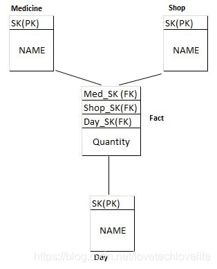

在这篇文章中，你将会学到如何一步步地进行维度数据建模，你将看到如何在真实的场景中使用维度模型。
什么是维度数据建模
维度数据建模是在进行数仓设计时的一种数据建模方法。这种建模方法的主要目标是为了提高数据检索效率，对select查询操作进行了优化。维度数据建模最适合数仓星型模型和雪花模型。
数仓中的维度数据建模不同于ER建模(Entity-Relationship Model，关系-实体模型)，ER建模的主要目标是通过减少数据的冗余来规范化数据， 而维度数据建模使得数据一旦存储在数仓中后，能被更容易地获取。维度模型是许多OLAP系统的底层数据模型。
维度模型是被传奇人物Ralph Kimball提出的，你可以读读他的这本书The Data Warehouse Toolkit
维度数据建模的步骤
接下来我们通过一个示例来了解维度数据建模的步骤。场景：您希望存储某个MedPlus商店每天销售多少片paracetamol 和 diclofenac 的信息。建模过程中，所有数据都归为两类：维度表和事实表。事实表中包含度量信息，维度表中包含限定度量的信息。
下面是数据仓库维度建模示例的步骤：
第一步：选择业务目标
在我们的例子中，业务目标就是存储单个商店每天paracetamol 和diclofenac 的销售数据。
第二步：确定粒度
粒度是表中存储的最低级别的信息。例如，如果表包含每日销售数据，则粒度为“每日”。
在我们的例子中，假设一个特定的MedPlus商店在特定的一天销售1000片paracetamol ，那么粒度是每天，而在特定的月份销售10000片，那么粒度是每月。
设定粒度信息是非常重要的，我们的例子采用的是“每日”的粒度。
第三步：确定维度和维度属性
在我们的例子中，可以确定三个维度：商店、药品(paracetamol 和diclofenac)和日期。下面是维度表的结构。
Medicine
| SK | NAME |
|–| –|
| 1 | Paracetamol |
| 2 | Diclofenac |
Shop
| SK | NAME |
|–| –|
| 1 | shop1|
| 2 | shop2|
| 3 | shop3|
Day
| SK | NAME |
|–| –|
| 1 | 2019-01-01|
| 2 | 2019-01-02|
| 3 | 2019-01-03|
第四步：确定事实表
事实表包含的是一些可度量的东西。例子中，药片的销售量就是一个度量，我们可以创建单独的事实表来存储这些度量。
例子中，粒度是每天销售的药片，我将Medicine、Shop和Day这三张表的SK列添加到下面的事实表中。

在这个例子中，我们创建了3个维表和1个事实表，维度表通过外键连接到事实表上，这个模型看起来像个星型，也被称为星型模型。
维度建模的优势
- 提升了数据查询效率：通过冗余存储减少了关联查询
- 简化了业务报表逻辑
- 更容易理解：维度模型中的数据不是维度就是事实
- 可扩展性：维度模型可以更新新的维度。
维度数据建模工具
建议可以尝试被广泛使用的erwin数据模型工具。